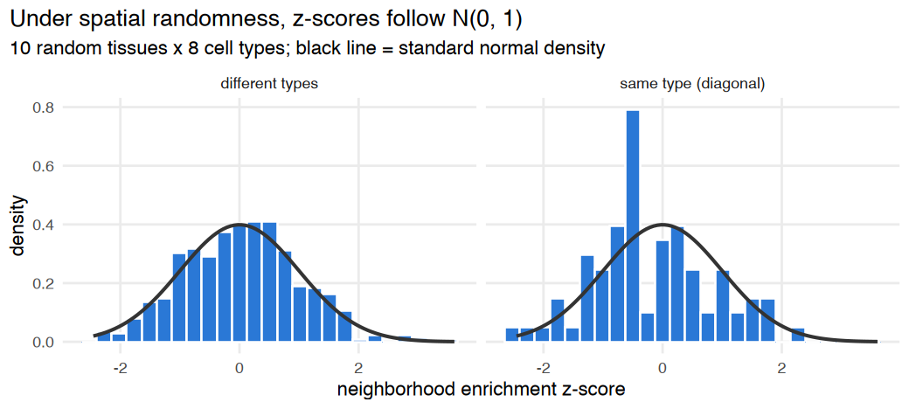
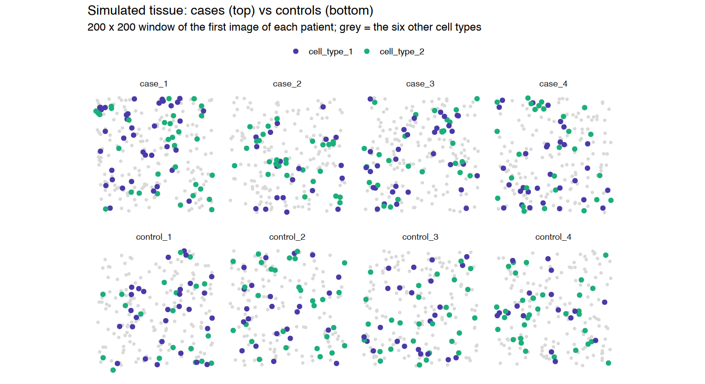
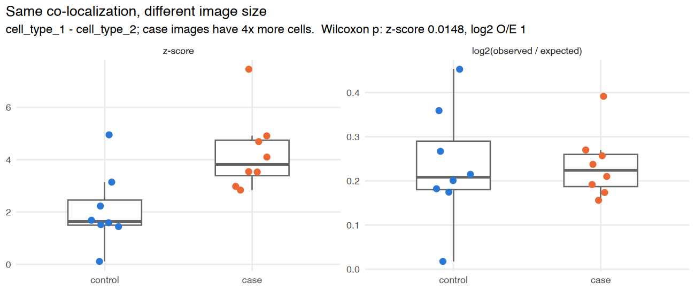
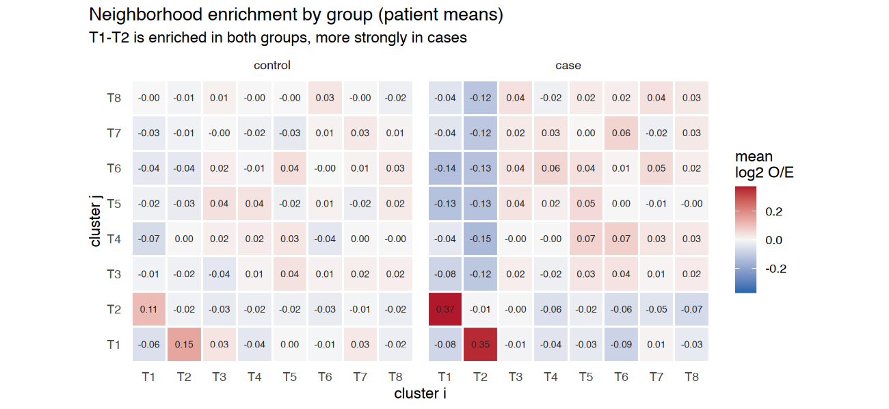
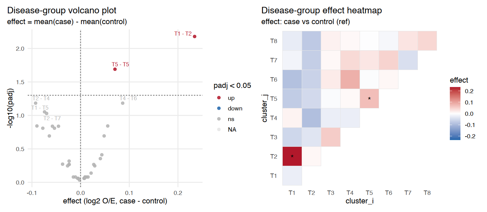
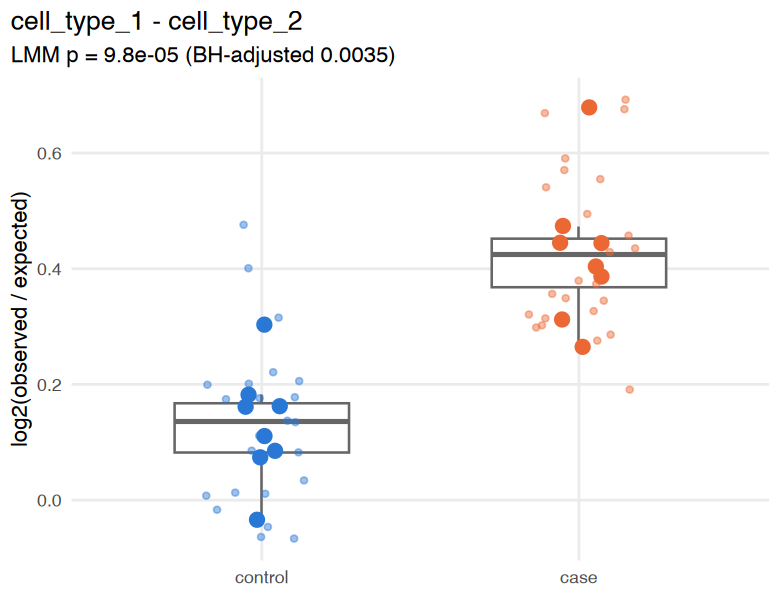
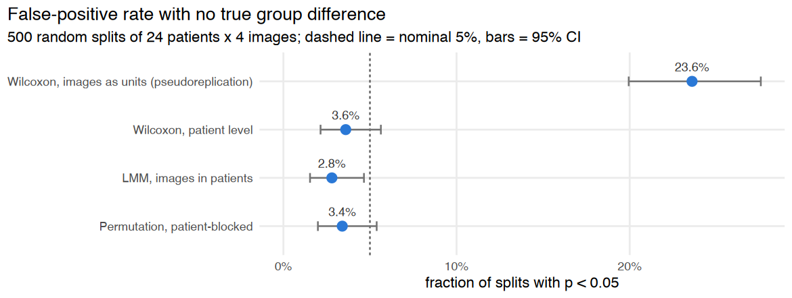
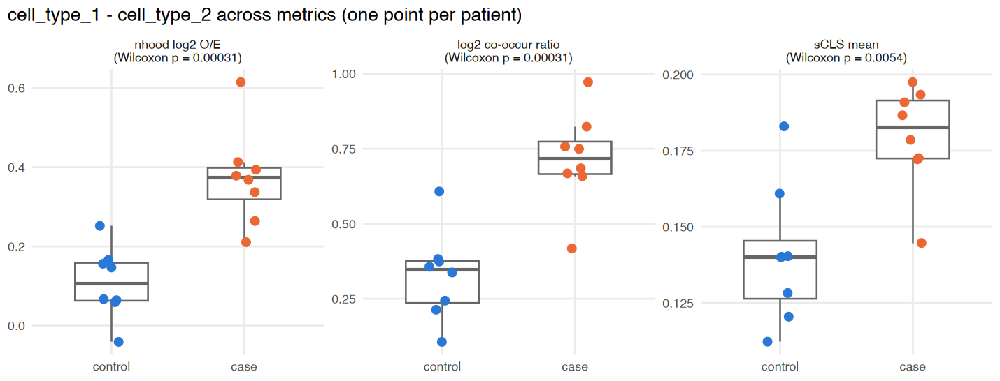
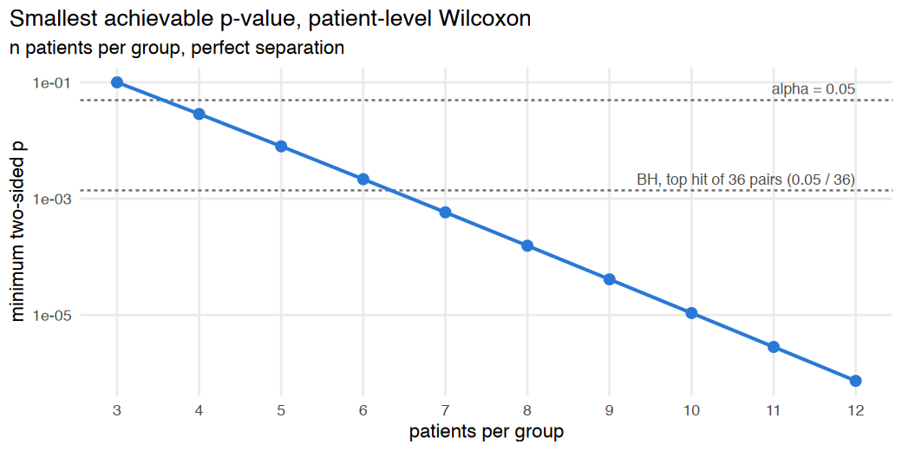

Case-control comparison of spatial co-localization with spatialCooccur
Source:vignettes/articles/case_control_tutorial.Rmd
case_control_tutorial.RmdThis article is a rendered copy of the Jupyter notebook vignettes/case_control_tutorial.ipynb;
download it to run the code yourself.
Author: Jun Inamo (juninamo@keio.jp)
This tutorial shows how to test whether the spatial co-localization of cell types differs between cases and controls. Spatial transcriptomics studies usually have a handful of patients per group and several images (fields of view, FOVs) per patient. With that design, which score you compare and what you treat as the independent unit matter as much as the test itself.
The workflow is:
- Compute a co-localization score per image with a
*_per_sample()helper. - Choose a score that is comparable across images
(
log2_oe, not the raw z-score). - Test patients, not images: aggregate to patient level, or model images nested in patients.
- Adjust for multiple testing across cell-type pairs and visualize.
All data here are simulated, so we know the ground truth:
cell_type_1 and cell_type_2 are co-localized
more strongly in cases than in controls, and nothing else differs.
Contents
- Setup
- Simulate a case-control cohort
- Per-image neighborhood enrichment
- Which score to compare: z-score vs log2(observed / expected)
- Patient-level summaries and sanity checks
- Testing case vs control
- Why images must not be treated as independent
- Other co-localization metrics
- Study design: how many patients?
- Checklist
1. Setup
Inside a clone of the repository, the development version is loaded
with devtools::load_all(). Otherwise, install the package
with devtools::install_github("juninamo/spatialCooccur")
and call library(spatialCooccur).
suppressPackageStartupMessages(suppressWarnings({
if (file.exists("../DESCRIPTION")) {
devtools::load_all("..", quiet = TRUE)
} else {
library(spatialCooccur)
}
library(ggplot2)
library(patchwork)
}))
options(repr.plot.width = 10, repr.plot.height = 5, repr.plot.res = 130)
# Colors used throughout: one hue per group, one per highlighted cell type.
group_cols <- c(control = "#2a78d6", case = "#eb6834")
type_cols <- c(cell_type_1 = "#4a3aa7", cell_type_2 = "#1baf7a", other = "grey85")
short <- function(x) sub("cell_type_", "T", x) # compact axis labels
theme_tut <- theme_minimal(base_size = 12) +
theme(panel.grid.minor = element_blank(),
plot.title = element_text(face = "bold"),
plot.title.position = "plot")A quick check of the permutation null
nhood_enrichment() compares the observed number of
neighbor edges between two cell types with a label-permutation null. If
cells are placed completely at random, the z-scores should look like
draws from N(0, 1) for every pair, same-type pairs (the
diagonal) included. This is the first thing to check before comparing
groups.
Note. spatialCooccur ≤ 0.99.1 shuffled the row and column labels independently, so each cell had two different labels in the null. Under spatial randomness that inflated same-type z-scores to about +11 and pushed different-type z-scores to about −2. The current version uses a single permutation for rows and columns. z-scores from earlier versions are not comparable with those below.
set.seed(1)
null_z <- do.call(rbind, lapply(1:10, function(r) {
n <- 1500
d <- data.frame(x = runif(n, 0, 600), y = runif(n, 0, 600),
cell_type = factor(sample(paste0("cell_type_", 1:8), n, replace = TRUE)))
rownames(d) <- paste0("r", r, "_c", seq_len(n))
z <- nhood_enrichment(d, cluster_key = "cell_type", neighbors.k = 10,
n_perms = 200, seed = r, n_jobs = 1)$zscore
data.frame(z = c(z), pair = ifelse(c(row(z) == col(z)), "same type (diagonal)", "different types"))
}))
aggregate(z ~ pair, data = null_z, FUN = function(v) round(c(mean = mean(v), sd = sd(v)), 2))
options(repr.plot.width = 8, repr.plot.height = 3.6)
ggplot(null_z, aes(z)) +
geom_histogram(aes(y = after_stat(density)), bins = 25, fill = "#2a78d6", color = "white") +
stat_function(fun = dnorm, linewidth = 0.8, color = "grey20") +
facet_wrap(~ pair) +
labs(title = "Under spatial randomness, z-scores follow N(0, 1)",
subtitle = "10 random tissues x 8 cell types; black line = standard normal density",
x = "neighborhood enrichment z-score", y = "density") +
theme_tut| pair | z |
|---|---|
| <chr> | <dbl[,2]> |
| different types | 0.03, 0.96 |
| same type (diagonal) | -0.19, 1.00 |

2. Simulate a case-control cohort
generate_sim_groups() simulates 8 case and 8
control patients with 3 images each (48 images). With
test_type = "distribute", a fraction
close_ratio of cell_type_2 cells is placed
about distance_param away from a cell_type_1
cell, and every other cell is placed at random.
- Cases have
close_ratio = 0.5, controls0.2. Controls also show some co-localization, as healthy tissue usually does. -
between_sample_noise = 0.1gives each patient its ownclose_ratio(between-patient heterogeneity). -
within_patient_noise = 0.05adds smaller image-to-image variation within a patient.
This two-level structure (images nested in patients) is exactly what real data look like.
cohort <- generate_sim_groups(
n_samples_per_group = 8,
group_close_ratio = list(case = 0.5, control = 0.2),
n_types = 8,
n_cells = 1200,
max_loc = 500,
test_type = "distribute",
distance_param = 10,
between_sample_noise = 0.10,
n_images_per_patient = 3,
within_patient_noise = 0.05,
seed = 2026
)
cohort$group <- factor(cohort$group, levels = c("control", "case"))
head(cohort)
design <- unique(cohort[, c("sample_id", "patient", "group")])
data.frame(patients = tapply(design$patient, design$group, function(p) length(unique(p))),
images = tapply(design$sample_id, design$group, length))| x | y | cell_type | sample_id | group | patient | |
|---|---|---|---|---|---|---|
| <dbl> | <dbl> | <fct> | <chr> | <fct> | <chr> | |
| case_1_img1_cell1 | 290.4731 | 348.42084 | cell_type_5 | case_1_img1 | case | case_1 |
| case_1_img1_cell2 | 275.4035 | 171.44057 | cell_type_6 | case_1_img1 | case | case_1 |
| case_1_img1_cell3 | 46.1745 | 129.48926 | cell_type_1 | case_1_img1 | case | case_1 |
| case_1_img1_cell4 | 303.7893 | 283.31119 | cell_type_5 | case_1_img1 | case | case_1 |
| case_1_img1_cell5 | 395.5516 | 94.18104 | cell_type_7 | case_1_img1 | case | case_1 |
| case_1_img1_cell6 | 270.5713 | 376.07537 | cell_type_2 | case_1_img1 | case | case_1 |
| patients | images | |
|---|---|---|
| <int> | <int> | |
| control | 8 | 24 |
| case | 8 | 24 |
A 200 × 200 window of one image for each of four cases and four controls, with the two cell types of interest highlighted. Cases have more violet-green pairs sitting next to each other. Even so, the difference is subtle by eye, which is why it has to be quantified.
show_ids <- c(paste0("case_", 1:4, "_img1"), paste0("control_", 1:4, "_img1"))
map_df <- subset(cohort, sample_id %in% show_ids & x < 200 & y < 200)
map_df$highlight <- ifelse(as.character(map_df$cell_type) %in% c("cell_type_1", "cell_type_2"),
as.character(map_df$cell_type), "other")
map_df$panel <- factor(sub("_img1", "", map_df$sample_id), levels = sub("_img1", "", show_ids))
options(repr.plot.width = 11, repr.plot.height = 6)
ggplot(map_df, aes(x, y)) +
geom_point(data = subset(map_df, highlight == "other"), color = type_cols[["other"]], size = 0.8) +
geom_point(data = subset(map_df, highlight != "other"), aes(color = highlight), size = 1.8) +
facet_wrap(~ panel, nrow = 2) +
scale_color_manual(values = type_cols[1:2], name = NULL) +
coord_equal() +
labs(title = "Simulated tissue: cases (top) vs controls (bottom)",
subtitle = "200 x 200 window of the first image of each patient; grey = the six other cell types", x = NULL, y = NULL) +
theme_tut +
theme(axis.text = element_blank(), panel.grid = element_blank(), legend.position = "top")
3. Per-image neighborhood enrichment
nhood_enrichment_per_sample() runs the permutation test
separately in every image. Labels are shuffled within
an image, so the null keeps that image’s cell-type composition.
Cell-type levels are harmonized across images, so a cell type missing
from one image gives NA instead of a misaligned matrix.
The input can be a long data.frame (as here), a Seurat object with
one FOV per image, or a list of Seurat objects. For Seurat input, images
are matched to meta.data by cell name, so
sample_key values do not need to equal the image names.
t0 <- Sys.time()
per_image <- nhood_enrichment_per_sample(
cohort,
sample_key = "sample_id",
group_key = "group",
cluster_key = "cell_type",
patient_key = "patient",
neighbors.k = 10,
n_perms = 200,
n_jobs = 1,
seed = 1
)
Sys.time() - t0
head(per_image[order(per_image$sample_id), ], 4)Time difference of 13.96439 secs| sample_id | cluster_i | cluster_j | zscore | count | expected | log2_oe | group | patient | n_cells | n_i | n_j | |
|---|---|---|---|---|---|---|---|---|---|---|---|---|
| <chr> | <chr> | <chr> | <dbl> | <dbl> | <dbl> | <dbl> | <chr> | <chr> | <int> | <int> | <int> | |
| 1 | case_1_img1 | cell_type_1 | cell_type_1 | -1.88681599 | 36.41652 | 39.71759 | -0.124868470 | case | case_1 | 1200 | 177 | 177 |
| 2 | case_1_img1 | cell_type_2 | cell_type_1 | 2.90194448 | 23.76023 | 19.79145 | 0.262503495 | case | case_1 | 1200 | 154 | 177 |
| 3 | case_1_img1 | cell_type_3 | cell_type_1 | -0.02335854 | 18.92671 | 18.95780 | -0.002356103 | case | case_1 | 1200 | 149 | 177 |
| 4 | case_1_img1 | cell_type_4 | cell_type_1 | -0.56936269 | 14.19000 | 14.86642 | -0.066739829 | case | case_1 | 1200 | 115 | 177 |
One row per image x cluster_i x cluster_j:
| column | meaning |
|---|---|
count |
observed (degree-normalized) number of neighbor edges between the two types |
expected |
mean count over label permutations: what composition alone predicts |
zscore |
(count - expected) / SD of the permutations: the evidence for enrichment within this image |
log2_oe |
log2(count / expected): the size of the enrichment |
n_cells, n_i, n_j
|
total cells and cells of each of the two types in the image |
4. Which score to compare: z-score vs log2(observed / expected)
A z-score is a signal-to-noise ratio. For the same spatial pattern, it grows roughly with the square root of the number of cells, because the permutation SD shrinks as more cells are counted. Real case and control images often differ in size or cell density (inflamed tissue is more cellular, biopsies differ in area). If they do, comparing z-scores confounds tissue size with co-localization.
To show this, simulate a cohort with no true
difference: both groups have close_ratio = 0.35.
The only difference is that case images contain 4x more cells (the same
density over a larger area).
size_cohort <- generate_sim_groups(
n_samples_per_group = 8,
group_close_ratio = list(case = 0.35, control = 0.35), # no true difference
n_types = 8,
n_cells = list(case = 3200, control = 800), # case images are 4x larger
max_loc = 410, # scaled to keep density constant
test_type = "distribute",
distance_param = 10,
between_sample_noise = 0.05,
seed = 7
)
size_scores <- nhood_enrichment_per_sample(
size_cohort, sample_key = "sample_id", group_key = "group",
cluster_key = "cell_type", patient_key = "patient",
neighbors.k = 10, n_perms = 200, n_jobs = 1, seed = 1
)
tgt <- function(d) subset(d, cluster_i == "cell_type_1" & cluster_j == "cell_type_2")
size_tgt <- tgt(size_scores)
size_tgt$group <- factor(size_tgt$group, levels = c("control", "case"))
size_tests <- do.call(rbind, lapply(c("zscore", "log2_oe"), function(v) {
r <- tgt(compare_groups(size_scores, value = v, method = "wilcox", ref_group = "control"))
data.frame(score = v, effect = signif(r$effect, 3), p = signif(r$p, 3))
}))
size_tests| score | effect | p |
|---|---|---|
| <chr> | <dbl> | <dbl> |
| zscore | 2.8700 | 0.000155 |
| log2_oe | 0.0589 | 0.105000 |
size_long <- rbind(
data.frame(size_tgt[, c("group", "n_cells")], score = "z-score", value = size_tgt$zscore),
data.frame(size_tgt[, c("group", "n_cells")], score = "log2(observed / expected)", value = size_tgt$log2_oe)
)
size_long$score <- factor(size_long$score, levels = c("z-score", "log2(observed / expected)"))
options(repr.plot.width = 10, repr.plot.height = 4.2)
ggplot(size_long, aes(group, value, color = group)) +
geom_boxplot(outlier.shape = NA, width = 0.5, color = "grey40") +
geom_jitter(width = 0.12, size = 2.4) +
facet_wrap(~ score, scales = "free_y") +
scale_color_manual(values = group_cols, guide = "none") +
labs(title = "Same co-localization, different image size",
subtitle = sprintf("cell_type_1 - cell_type_2; case images have 4x more cells. Wilcoxon p: z-score %.3g, log2 O/E %.3g",
size_tests$p[1], size_tests$p[2]),
x = NULL, y = NULL) +
theme_tut
The z-score reports a highly significant difference that does not
exist. log2_oe measures how much more often the
two types touch than expected, so it barely moves with image size, and
the difference is not significant. The small residual shift is an edge
effect: in smaller images a larger share of cells sit at the border and
lose neighbors there.
Recommendation: compare log2_oe between
groups. Use the z-score to judge whether enrichment exists within a
sample, not to rank or compare samples. Never compare raw
count: it also scales with how abundant the two cell types
are.
log2_oe is still conditional on composition (the
permutation null keeps each image’s cell-type proportions). A change in
co-localization is therefore reported separately from a change in
abundance. Check abundance yourself with n_i /
n_j.
5. Patient-level summaries and sanity checks
summarize_by_patient() averages image-level scores
within each patient. It gives one value per patient for each pair and
recomputes no permutations. This is what unit = "patient"
does inside the *_per_sample() helpers.
per_patient <- summarize_by_patient(per_image)
per_patient$group <- factor(per_patient$group, levels = c("control", "case"))
dim(per_image); dim(per_patient)- 3072
- 12
- 1024
- 12
Before any test, look at the group-average log2_oe for
every pair. The planted pair should stand out in cases.
hm <- aggregate(log2_oe ~ cluster_i + cluster_j + group, data = per_patient, FUN = mean)
hm$cluster_i <- short(hm$cluster_i); hm$cluster_j <- short(hm$cluster_j)
lim <- max(abs(hm$log2_oe))
options(repr.plot.width = 10, repr.plot.height = 4.6)
ggplot(hm, aes(cluster_i, cluster_j, fill = log2_oe)) +
geom_tile(color = "white", linewidth = 0.6) +
geom_text(aes(label = sprintf("%.2f", log2_oe)), size = 2.6, color = "grey15") +
facet_wrap(~ group) +
scale_fill_gradient2(low = "#2166AC", mid = "grey97", high = "#B2182B",
midpoint = 0, limits = c(-lim, lim), name = "mean\nlog2 O/E") +
coord_equal() +
labs(title = "Neighborhood enrichment by group (patient means)",
subtitle = "T1-T2 is enriched in both groups, more strongly in cases",
x = "cluster i", y = "cluster j") +
theme_tut + theme(panel.grid = element_blank())
6. Testing case vs control
Three strategies respect the fact that patients, not images, are
independent. Each is one call to compare_groups():
| strategy | input | call |
|---|---|---|
| Patient-level Wilcoxon | one value per patient | compare_groups(per_patient, method = "wilcox") |
| Linear mixed model | all images | compare_groups(per_image, method = "lmm", patient_key = "patient") |
| Patient-blocked permutation | all images | compare_groups(per_image, method = "perm", patient_key = "patient") |
Always set ref_group = "control" so that
effect = mean(case) - mean(control). Without it the
reference is chosen alphabetically, and "case" sorts before
"control". Use symmetric = TRUE to test each
unordered pair once: (T1, T2) and (T2, T1) carry the same information,
and testing both doubles the multiple-testing burden.
For the LMM, p-values use Satterthwaite degrees of freedom when lmerTest is installed. Wald z-tests are anti-conservative with the small numbers of patients typical in spatial studies.
res_wilcox <- compare_groups(per_patient, value = "log2_oe", method = "wilcox",
ref_group = "control", symmetric = TRUE)
res_lmm <- compare_groups(per_image, value = "log2_oe", method = "lmm",
patient_key = "patient", ref_group = "control", symmetric = TRUE)
res_perm <- compare_groups(per_image, value = "log2_oe", method = "perm",
patient_key = "patient", ref_group = "control", symmetric = TRUE,
n_perms = 5000)
attr(res_lmm, "p_method")
cols <- c("cluster_i", "cluster_j", "effect", "p", "padj")
head(res_lmm[, c(cols[1:3], "estimate", cols[4:5])], 8)‘LMM, Satterthwaite df (lmerTest)’
| cluster_i | cluster_j | effect | estimate | p | padj | |
|---|---|---|---|---|---|---|
| <chr> | <chr> | <dbl> | <dbl> | <dbl> | <dbl> | |
| 1 | cell_type_1 | cell_type_2 | 0.22916160 | 0.22916160 | 8.049539e-05 | 0.002897834 |
| 2 | cell_type_2 | cell_type_8 | -0.11305790 | -0.11305790 | 1.558188e-03 | 0.024180643 |
| 3 | cell_type_2 | cell_type_3 | -0.14825217 | -0.14825217 | 2.099779e-03 | 0.024180643 |
| 4 | cell_type_2 | cell_type_7 | -0.11053135 | -0.11053135 | 3.334536e-03 | 0.024180643 |
| 5 | cell_type_2 | cell_type_4 | -0.09852969 | -0.09852969 | 3.358423e-03 | 0.024180643 |
| 6 | cell_type_2 | cell_type_5 | -0.14217484 | -0.14217484 | 4.037143e-03 | 0.024222855 |
| 7 | cell_type_1 | cell_type_3 | -0.08997157 | -0.08997157 | 8.805286e-03 | 0.044252799 |
| 8 | cell_type_1 | cell_type_4 | -0.12369669 | -0.12369669 | 9.833955e-03 | 0.044252799 |
summary_tbl <- do.call(rbind, lapply(
list("Wilcoxon, patient level" = res_wilcox, "LMM, images in patients" = res_lmm,
"Permutation, patient-blocked" = res_perm),
function(r) tgt(r)[, c("effect", "p", "padj")]))
signif(summary_tbl, 3)| effect | p | padj | |
|---|---|---|---|
| <dbl> | <dbl> | <dbl> | |
| Wilcoxon, patient level | 0.229 | 3.11e-04 | 0.0112 |
| LMM, images in patients | 0.229 | 8.05e-05 | 0.0029 |
| Permutation, patient-blocked | 0.229 | 4.00e-04 | 0.0072 |
All three strategies detect the planted T1-T2 difference after BH correction and agree on the effect size. The volcano plot shows every pair at once:
options(repr.plot.width = 11, repr.plot.height = 4.8)
vol <- res_lmm
vol$cluster_i <- short(vol$cluster_i); vol$cluster_j <- short(vol$cluster_j)
dh <- res_lmm
dh$cluster_i <- short(dh$cluster_i); dh$cluster_j <- short(dh$cluster_j)
plot_volcano_groups(vol, label_top = 6) + theme_tut + labs(x = "effect (log2 O/E, case - control)") |
plot_group_delta_heatmap(dh) + theme_tut + theme(panel.grid = element_blank())
Besides T1-T2, several pairs of T2 or T1 with a third cell type are significantly depleted in cases. This is not a false positive. In cases more T2 cells sit right next to T1 cells, so T1 and T2 have fewer neighbors of every other type. Within-image enrichment scores are relative: enriching one partner depletes the others. Read such pairs as consequences of the main change, not as independent findings.
Always plot the per-patient values behind a hit. Large points are patient means, small points the individual images:
img_t <- tgt(per_image); img_t$group <- factor(img_t$group, levels = c("control", "case"))
pat_t <- tgt(per_patient)
options(repr.plot.width = 6, repr.plot.height = 4.6)
ggplot(pat_t, aes(group, log2_oe, color = group)) +
geom_boxplot(outlier.shape = NA, width = 0.55, color = "grey40") +
geom_point(data = img_t, position = position_jitter(width = 0.18, seed = 1),
size = 1.2, alpha = 0.45) +
geom_point(position = position_jitter(width = 0.08, seed = 2), size = 3.2) +
scale_color_manual(values = group_cols, guide = "none") +
labs(title = "cell_type_1 - cell_type_2",
subtitle = sprintf("LMM p = %.2g (BH-adjusted %.2g)", tgt(res_lmm)$p, tgt(res_lmm)$padj),
x = NULL, y = "log2(observed / expected)") +
theme_tut
Adjusting for covariates
With method = "lmm", extra fixed effects go in through
covariates: age, sex, processing batch, or the abundance of
the two cell types. Covariates are ordinary columns of the per-sample
table, so merge patient metadata first. estimate is then
the covariate-adjusted case effect, and effect stays the
raw mean difference.
set.seed(3)
batch_tbl <- data.frame(patient = unique(per_image$patient))
batch_tbl$batch <- sample(c("run1", "run2"), nrow(batch_tbl), replace = TRUE)
per_image_b <- merge(per_image, batch_tbl, by = "patient")
res_adj <- compare_groups(per_image_b, value = "log2_oe", method = "lmm",
patient_key = "patient", covariates = c("batch", "n_cells"),
ref_group = "control", symmetric = TRUE)
signif(tgt(res_adj)[, c("effect", "estimate", "p", "padj")], 3)| effect | estimate | p | padj | |
|---|---|---|---|---|
| <dbl> | <dbl> | <dbl> | <dbl> | |
| 1 | 0.229 | 0.242 | 1.23e-05 | 0.000444 |
7. Why images must not be treated as independent
Images from the same patient share that patient’s biology, so they
are correlated. A Wilcoxon or t-test on all images acts as if there were
3x more independent observations than there are
(pseudoreplication). compare_groups()
warns when it detects this. The next experiment shows how large the
problem is.
We simulate 24 patients × 4 images from one population with strong between-patient heterogeneity, split the patients at random into two “groups” 500 times, and record how often each strategy calls T1-T2 significant at α = 0.05. With no true difference, a valid test should reject about 5% of the time.
pool <- generate_sim_groups(
n_samples_per_group = 24, group_close_ratio = list(all = 0.3),
n_types = 8, n_cells = 800, max_loc = 410, test_type = "distribute", distance_param = 10,
between_sample_noise = 0.15, n_images_per_patient = 4, within_patient_noise = 0.03, seed = 11
)
pool_t <- tgt(nhood_enrichment_per_sample(
pool, sample_key = "sample_id", group_key = "group", cluster_key = "cell_type",
patient_key = "patient", neighbors.k = 10, n_perms = 100, n_jobs = 1, seed = 1
))
pats <- unique(pool_t$patient)
set.seed(2024)
null_p <- t(replicate(500, {
d <- pool_t
d$group <- ifelse(d$patient %in% sample(pats, 12), "case", "control")
q <- function(x, ...) suppressWarnings(suppressMessages(
compare_groups(x, value = "log2_oe", ref_group = "control", ...)))$p
c("Wilcoxon, images as units (pseudoreplication)" = q(d, method = "wilcox"),
"Wilcoxon, patient level" = q(summarize_by_patient(d), method = "wilcox"),
"LMM, images in patients" = q(d, method = "lmm", patient_key = "patient"),
"Permutation, patient-blocked" = q(d, method = "perm", patient_key = "patient", n_perms = 500))
}))
fpr <- data.frame(method = colnames(null_p), rate = colMeans(null_p < 0.05))
fpr$lo <- sapply(fpr$rate, function(r) binom.test(round(r * 500), 500)$conf.int[1])
fpr$hi <- sapply(fpr$rate, function(r) binom.test(round(r * 500), 500)$conf.int[2])
fpr$method <- factor(fpr$method, levels = rev(fpr$method))
fpr| method | rate | lo | hi | |
|---|---|---|---|---|
| <fct> | <dbl> | <dbl> | <dbl> | |
| Wilcoxon, images as units (pseudoreplication) | Wilcoxon, images as units (pseudoreplication) | 0.138 | 0.10898386 | 0.17137466 |
| Wilcoxon, patient level | Wilcoxon, patient level | 0.040 | 0.02460131 | 0.06110261 |
| LMM, images in patients | LMM, images in patients | 0.050 | 0.03261518 | 0.07292762 |
| Permutation, patient-blocked | Permutation, patient-blocked | 0.050 | 0.03261518 | 0.07292762 |
options(repr.plot.width = 9, repr.plot.height = 3.4)
ggplot(fpr, aes(rate, method)) +
geom_vline(xintercept = 0.05, linetype = "dashed", color = "grey40") +
geom_errorbarh(aes(xmin = lo, xmax = hi), height = 0.2, color = "grey45") +
geom_point(size = 3.2, color = "#2a78d6") +
geom_text(aes(label = sprintf("%.1f%%", 100 * rate)), nudge_y = 0.3, size = 3.4, color = "grey20") +
scale_x_continuous(labels = scales::percent, limits = c(0, NA)) +
labs(title = "False-positive rate with no true group difference",
subtitle = "500 random splits of 24 patients x 4 images; dashed line = nominal 5%, bars = 95% CI",
x = "fraction of splits with p < 0.05", y = NULL) +
theme_tut
Treating images as independent gives about three times the nominal false-positive rate, and the gap widens with more images per patient or more between-patient heterogeneity. The three patient-aware strategies stay at or below 5%.
8. Other co-localization metrics
The same *_per_sample() → compare_groups()
pattern works for the other scores in the package:
-
cooccur_ratio_per_sample(): radius-based co-occurrence ratio p(j | neighbor of i) / p(j). It is normalized by composition but has no permutation null. -
cooccur_local_per_sample(): per-cell local co-occurrence score (sCLS), summarized per image. It has no null model, so its level rises with the abundance of the two cell types. Checkn_i/n_j, or adjust for them as covariates, when groups differ in composition. -
interaction_spot_per_sample()(Seurat input): number of connected interaction spots. Comparespots_per_1k_cellsrather than rawn_spotswhen images differ in size.
ratio_img <- cooccur_ratio_per_sample(
cohort, sample_key = "sample_id", group_key = "group", cluster_key = "cell_type",
patient_key = "patient", radius = 15, k = 50
)
local_img <- cooccur_local_per_sample(
cohort, sample_key = "sample_id", group_key = "group", cluster_key = "cell_type",
cluster_x = "cell_type_1", cluster_y = "cell_type_2", patient_key = "patient",
neighbors.k = 20, radius = 15, summarize = c("mean", "pos_rate")
)
ratio_img$log2_ratio <- log2(ratio_img$ratio)
metrics <- list(
"nhood log2 O/E" = list(d = per_image, v = "log2_oe"),
"log2 co-occur ratio" = list(d = ratio_img, v = "log2_ratio"),
"sCLS mean" = list(d = local_img, v = "mean")
)
metric_res <- do.call(rbind, lapply(names(metrics), function(m) {
pt <- tgt(summarize_by_patient(metrics[[m]]$d))
r <- compare_groups(pt, value = metrics[[m]]$v, method = "wilcox", ref_group = "control")
list(points = data.frame(metric = m, group = pt$group, value = pt[[metrics[[m]]$v]]),
p = r$p)
}))
pts <- do.call(rbind, metric_res[, "points"])
pts$group <- factor(pts$group, levels = c("control", "case"))
labs_p <- setNames(sprintf("%s\n(Wilcoxon p = %.2g)", names(metrics), unlist(metric_res[, "p"])), names(metrics))
pts$metric <- factor(labs_p[pts$metric], levels = labs_p)
options(repr.plot.width = 11, repr.plot.height = 4.2)
ggplot(pts, aes(group, value, color = group)) +
geom_boxplot(outlier.shape = NA, width = 0.55, color = "grey40") +
geom_point(position = position_jitter(width = 0.1, seed = 1), size = 2.6) +
facet_wrap(~ metric, scales = "free_y") +
scale_color_manual(values = group_cols, guide = "none") +
labs(title = "cell_type_1 - cell_type_2 across metrics (one point per patient)",
x = NULL, y = NULL) +
theme_tut
9. Study design: how many patients?
With few patients, an exact rank test has a hard floor on its smallest possible p-value, regardless of how large the effect is. With 3 vs 3 patients a two-sided Wilcoxon cannot go below 0.10, so nothing can ever be significant. Testing every pair among many cell types lowers the bar further. For the single strongest hit to pass BH among M tests, its p must be below 0.05 / M.
n <- 3:12
floor_df <- data.frame(n = n, p_min = 2 / choose(2 * n, n)) # exact two-sided Wilcoxon, n vs n
M <- choose(8, 2) + 8 # unordered pairs among 8 cell types
thr <- data.frame(y = c(0.05, 0.05 / M),
lab = c("alpha = 0.05", sprintf("BH, top hit of %d pairs (0.05 / %d)", M, M)))
options(repr.plot.width = 8, repr.plot.height = 4)
ggplot(floor_df, aes(n, p_min)) +
geom_hline(data = thr, aes(yintercept = y), linetype = "dashed", color = "grey45") +
geom_text(data = thr, aes(x = 12, y = y, label = lab), hjust = 1, vjust = -0.5, size = 3.3, color = "grey30") +
geom_line(linewidth = 0.8, color = "#2a78d6") +
geom_point(size = 2.6, color = "#2a78d6") +
scale_y_log10() + scale_x_continuous(breaks = n) +
labs(title = "Smallest achievable p-value, patient-level Wilcoxon",
subtitle = "n patients per group, perfect separation",
x = "patients per group", y = "minimum two-sided p") +
theme_tut
Practical consequences:
- With fewer than about 7 patients per group, even a perfectly separated pair cannot survive BH correction over all 36 pairs. Pre-specify a small set of hypothesized pairs instead of testing all pairs, or use the LMM, which uses image-level variation and has no rank floor.
- Adding images per patient helps only with within-patient noise. Power is limited by the number of patients.
- Use
min_n_per_group(default 2) to skip pairs that are observed in too few samples, e.g. because one cell type is absent from most images.
10. Checklist
-
Unit of analysis = patient. Aggregate with
summarize_by_patient()/unit = "patient", or keep images and usemethod = "lmm"or"perm"withpatient_key. -
Compare
log2_oe, notzscoreorcount. z-scores scale with the number of cells, and counts with cell-type abundance. -
Set
ref_group = "control"so that positiveeffectmeans higher in cases. -
Use
symmetric = TRUEfor symmetric scores, so each pair is tested once. -
Report abundance separately (
n_i,n_j). Co-localization and composition are different findings. -
Adjust for covariates (batch, age, sex, image size)
with
method = "lmm"andcovariates. - Read depletion hits in context. Enrichment of one partner forces depletion of others.
- Plot patient-level values behind every significant pair.
R version 4.3.2 (2023-10-31)
Platform: aarch64-apple-darwin20 (64-bit)
Running under: macOS 26.3.1
Matrix products: default
BLAS: /Library/Frameworks/R.framework/Versions/4.3-arm64/Resources/lib/libRblas.0.dylib
LAPACK: /Library/Frameworks/R.framework/Versions/4.3-arm64/Resources/lib/libRlapack.dylib; LAPACK version 3.11.0
locale:
[1] en_US.UTF-8/en_US.UTF-8/en_US.UTF-8/C/en_US.UTF-8/en_US.UTF-8
time zone: Asia/Tokyo
tzcode source: internal
attached base packages:
[1] stats graphics grDevices utils datasets methods base
other attached packages:
[1] patchwork_1.1.3 ggplot2_3.4.4 spatialCooccur_0.99.1
[4] testthat_3.2.1
loaded via a namespace (and not attached):
[1] RColorBrewer_1.1-3 rstudioapi_0.15.0 jsonlite_2.0.0
[4] magrittr_2.0.3 spatstat.utils_3.1-2 nloptr_2.0.3
[7] farver_2.1.1 fs_1.6.3 vctrs_0.6.5
[10] ROCR_1.0-11 minqa_1.2.6 Cairo_1.6-2
[13] memoise_2.0.1 spatstat.explore_3.3-4 base64enc_0.1-3
[16] htmltools_0.5.7 usethis_2.2.2 sctransform_0.4.1
[19] parallelly_1.36.0 KernSmooth_2.23-22 htmlwidgets_1.6.4
[22] desc_1.4.3 ica_1.0-3 plyr_1.8.9
[25] plotly_4.10.3 zoo_1.8-12 cachem_1.0.8
[28] uuid_1.1-1 igraph_1.6.0 mime_0.12
[31] lifecycle_1.0.4 pkgconfig_2.0.3 Matrix_1.6-5
[34] R6_2.5.1 fastmap_1.1.1 fitdistrplus_1.1-11
[37] future_1.33.1 shiny_1.8.0 numDeriv_2016.8-1.1
[40] digest_0.6.33 colorspace_2.1-0 rprojroot_2.0.4
[43] Seurat_5.2.1 tensor_1.5 RSpectra_0.16-1
[46] irlba_2.3.5.1 pkgload_1.3.3 labeling_0.4.3
[49] progressr_0.14.0 spatstat.sparse_3.1-0 httr_1.4.7
[52] polyclip_1.10-6 abind_1.4-5 compiler_4.3.2
[55] remotes_2.4.2.1 withr_2.5.2 fastDummies_1.7.3
[58] pkgbuild_1.4.3 MASS_7.3-60 sessioninfo_1.2.2
[61] tools_4.3.2 lmtest_0.9-40 httpuv_1.6.13
[64] future.apply_1.11.1 goftest_1.2-3 glue_1.6.2
[67] nlme_3.1-163 promises_1.2.1 grid_4.3.2
[70] pbdZMQ_0.3-10 Rtsne_0.17 cluster_2.1.4
[73] reshape2_1.4.4 generics_0.1.3 gtable_0.3.4
[76] spatstat.data_3.1-4 tidyr_1.3.0 data.table_1.16.0
[79] sp_2.1-2 spatstat.geom_3.3-5 RcppAnnoy_0.0.21
[82] ggrepel_0.9.4 RANN_2.6.1 pillar_1.11.0
[85] stringr_1.5.1 spam_2.10-0 IRdisplay_1.1
[88] RcppHNSW_0.5.0 later_1.3.2 splines_4.3.2
[91] dplyr_1.1.4 moments_0.14.1 lattice_0.21-9
[94] survival_3.5-7 deldir_2.0-2 tidyselect_1.2.0
[97] miniUI_0.1.1.1 pbapply_1.7-2 gridExtra_2.3
[100] scattermore_1.2 brio_1.1.4 devtools_2.4.5
[103] matrixStats_1.2.0 stringi_1.8.3 boot_1.3-28.1
[106] lazyeval_0.2.2 evaluate_0.23 codetools_0.2-19
[109] tibble_3.2.1 cli_3.6.2 uwot_0.1.16
[112] IRkernel_1.3.2 xtable_1.8-4 reticulate_1.35.0
[115] repr_1.1.6 munsell_0.5.0 Rcpp_1.0.11
[118] globals_0.16.2 spatstat.random_3.3-2 png_0.1-8
[121] spatstat.univar_3.1-2 parallel_4.3.2 ellipsis_0.3.2
[124] dotCall64_1.1-1 profvis_0.3.8 urlchecker_1.0.1
[127] lme4_1.1-35.1 listenv_0.9.0 viridisLite_0.4.2
[130] lmerTest_3.1-3 scales_1.3.0 ggridges_0.5.5
[133] SeuratObject_5.0.2 purrr_1.0.2 crayon_1.5.2
[136] rlang_1.1.2 cowplot_1.1.2